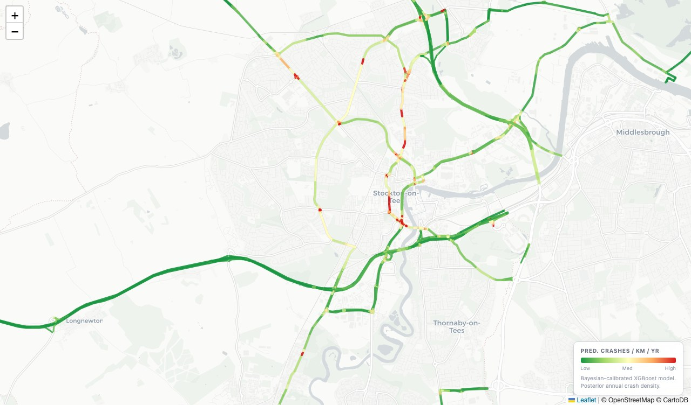
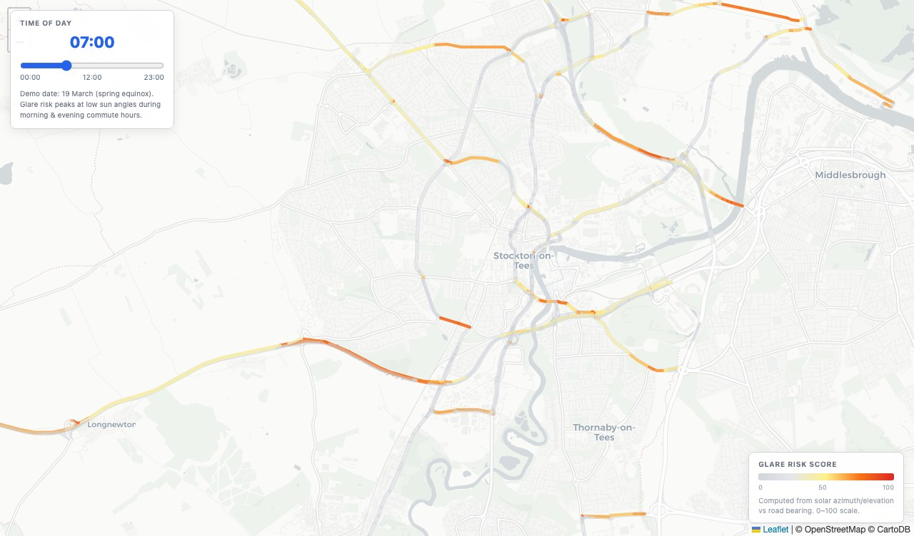
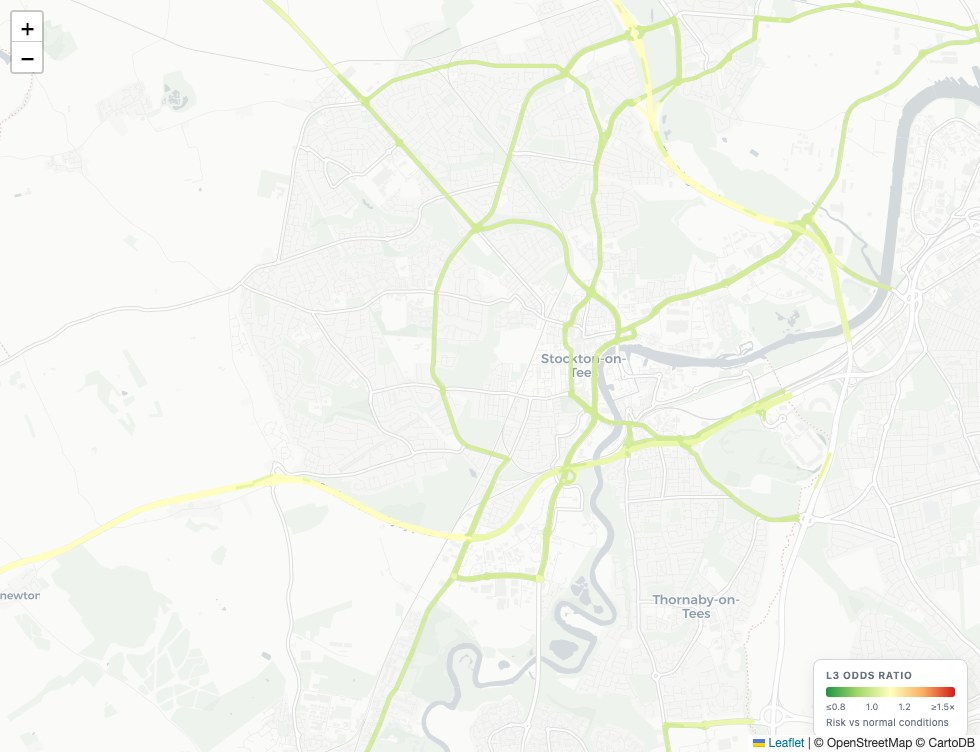
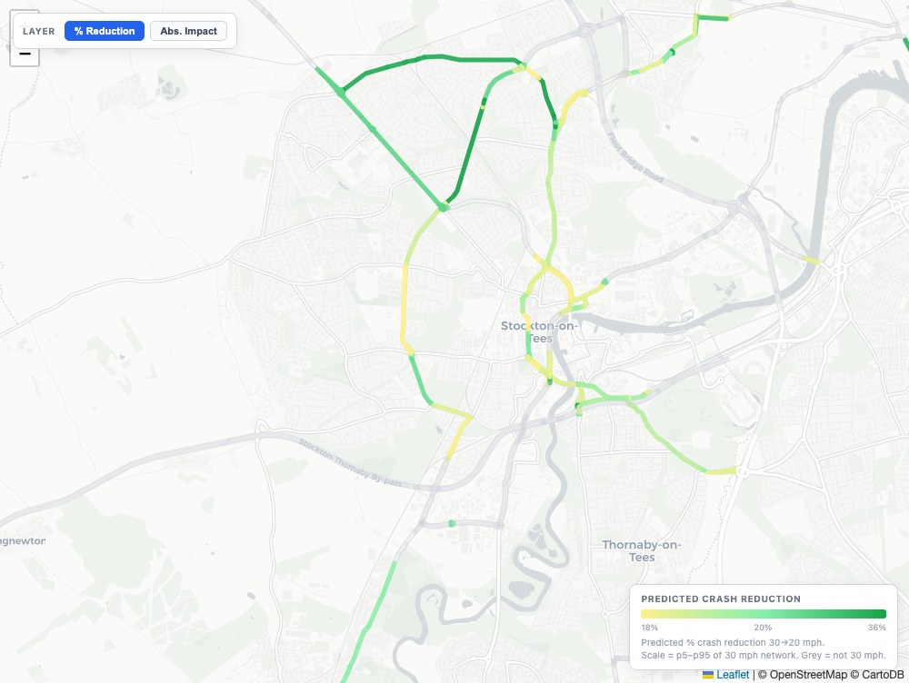

Data insights generated by the Road Risk Engine
DriveFactor's Road Risk Engine represents the next generation of road safety modelling. It continuously integrates collision records, road geometry, traffic flow and environmental conditions to produce high-resolution models of risk across road networks.

Spatial Risk Predictions
Per-segment collision probability derived from road geometry, road layouts, features and recorded collision history. The baseline risk picture for any network.
View product →
Dynamic Risk Modelling
Models how collision risk varies with time of day, season and weather, enabling scenario evaluation and risk forecasting.
View product →
Sun Glare Intensity Maps
Models sun trajectory alignment with road geometry. Identifies which segments face direct sun exposure by time of day and season, and flags periods of severe glare risk.
View product →
Absolute Road Risk
Collision risk per vehicle kilometre travelled. Identifies roads that are genuinely dangerous to use, not just those that carry high traffic volumes.
View product →
Traffic Scenario Planner
Adjust traffic conditions and time of day to see how network risk responds. Supports understanding of traffic dynamics and how this impacts risk.
View product →
Road Safety Intervention Planner
Predict the collision reduction impact of a road safety intervention, using evidence from comparable treated road segments. See the demo on 30 to 20mph speed limit reductions.
View product →